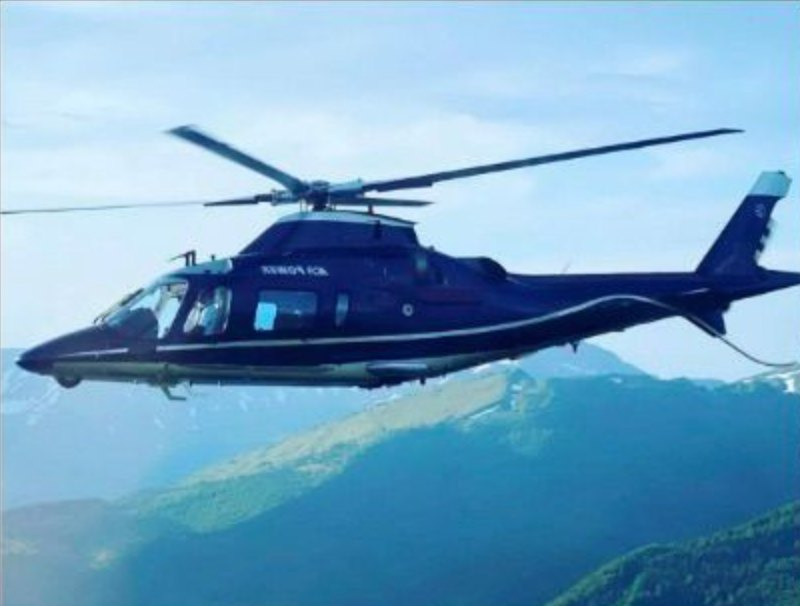

Private Itinerary · Prepared by Suites With Keith
Brenda, Jim, Taylor, Sol, Megan & Pablo in Italy & Greece
New York · Amalfi Coast · Rome · Santorini · Lake Como — September 3–17, 2026
New York · Amalfi Coast · Rome · Santorini · Lake Como — September 3–17, 2026
Fourteen nights, five stops, two helicopters, two private jets, and a wedding in the middle of it. Everything below runs in order, with confirmation numbers under each item.
Approximate times are marked approx and depend on traffic. Tap any stop below to jump straight to that part of the trip. Keith’s cell is +1 415-272-4316, call or text anytime.
Every leg is booked and confirmed. Here is how you move from New York through Italy and Greece and home again — two Delta legs across the Atlantic, two helicopters on the Amalfi Coast, two private jets, and a car waiting at every airport.
Thu, Sep 3 — arrives 3:30 PM. Meals confirmed on board.
Thu, Sep 3 — Patrick Wu (917-468-1043) meets you at LGA and takes all four of you to the hotel. Arrive Gansevoort approx 4:30 PM.
Fri, Sep 4 — pickup at the Gansevoort 2:00 PM. Arrive JFK approx 3:00 PM.
Fri, Sep 4 — departs 5:20 PM, arrives 8:10 AM Saturday. Meals confirmed on board. Confirmation HCJGS7.
Sat, Sep 5 — about 15 minutes in the air. A car meets you at the Scala helipad and takes you down to Hotel Santa Caterina, arriving approx 10:00 AM. Bags go by road with Susie and Mike.
Tue, Sep 8 — Mercedes minivan from the hotel 11:00 AM up to the Scala helipad; depart 11:45 AM, land Urbe approx 12:55 PM (70 minutes, twin engine, two pilots). A minivan meets you at Urbe; arrive at the Baglioni approx 1:30 PM.
Thu, Sep 10 — Mercedes Sprinter for all six plus luggage from the Baglioni 11:00 AM, at the jet approx 11:40 AM. Departs 12:00 PM, arrives 3:00 PM Santorini time. About 2 hours in the air; Greece is 1 hour ahead of Italy. Susie and Mike fly with you.
BA116 from JFK 8:20 PM Wed, Sep 9 to Heathrow, then BA688 arriving Santorini 4:15 PM Thu, Sep 10. Transfer confirmed: the driver will be waiting at baggage claim with their names.
Mon, Sep 14 — the villa’s complimentary shuttle to the airport is confirmed. Departs 11:30 AM, arrives Linate approx 1:30 PM local. About 3 hours in the air; Italy is 1 hour behind Greece.
Mon, Sep 14 — departs 12:00, arrives 1:45 PM. Reservation Z912KE.
Mon, Sep 14 — confirmed, about an hour, all motorway. Arrive Villa d’Este approx 3:00 PM.
Thu, Sep 17 — departs approx 10:00 AM, arrive Linate approx 11:00 AM.
Thu, Sep 17 — departs 1:40 PM, lands 2:45 PM. Connection meet and assist at Heathrow, confirmed: your greeter meets you with a welcome sign for the Meckleys and walks you between terminals. Same ticket throughout, bags checked through to Dallas. Reference VIP-10918-LHR.
Thu, Sep 17 — departs 4:25 PM, arrives 8:35 PM. Business class; seats 5L and 5D on the Dallas leg. American QCNWBN · British Airways COEFLO.
Every suitcase under 44 lbs. Keep passports, medications and chargers in your personal bag, since suitcases may be stowed out of reach on the private flights and helicopters. Keith will confirm what luggage is allowed on the helicopters and text Brenda.





Nothing here needs anything from you unless noted; it is simply what I am still confirming on my side.
We have requested extra hangers, an extra blanket, a small fan in each room, and glass water bottles only (no plastic).
Your credit card details, by phone. I will write them on paper only, use them for the Heathrow connection, Megan’s Santorini transfer, and the Como and Amalfi boats, then destroy the paper.
Italy is 7 hours ahead of Austin; Greece is 8 hours ahead.
Appreciated but never expected in Italy or Greece — comfortable ranges, always in euros, cash.
Please reach out during your trip if anything comes up at all. I’ll be in Austin — seven hours behind you in Italy, eight in Greece — and I’ll do my best to assist the moment something goes sideways.